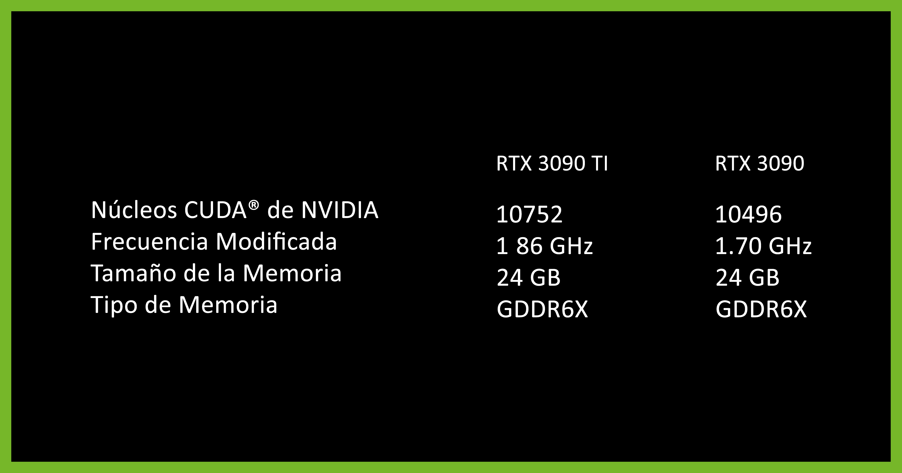

DLSS
MAXIMO RENDIMIENTO
Obten un rendimiento más rápido con NVIDIA DLSS. Consigue un aumento de rendimiento con NVIDIA DLSS (Deep Learning Super Sampling). Los Núcleos Tensor especializSados en IA de las tarjetas gráficas GeForce RTX aumentan la velocidad con una calidad de imagen sin compromisos. Esto te permite aumentar la configuración y la resolución para disfrutar de una experiencia visual aún mejor.
RTX
EXPERIENCIAS MÁS INMERSIVAS
El ray traicing simula cómo se comporta la luz en el mundo realpara reproducir los gráficos mas realistas e inmersivos para jugadores y creadores. Las series 30 tienen Núcleos RT de 2da generación para lograr un máximo rendimiento.
8K
Conecta, reproduce, captura y mira en HDR brillante con resoluciones de hasta 8K mediante GeForce RTX 3090 Ti o RTX 3090. Captura imágenes de hasta HDR 8K con la función GeForce Experience ShadowPlay y reprodúcelas sin problemas con la decodificación AV1.
REFLEX
proporciona la máxima ventaja competitiva. La latencia más baja. El mejor tiempo de respuesta. Impulsada por las tarjetas gráficas GeForce RTX Serie 30 y los monitores NVIDIA G-SYNC Displays con Reflex. Apunta a los objetivos más rápido, reacciona con más velocidad y aumenta la precisión de la mira mediante un revolucionario conjunto de tecnologías que permiten reducir y medir la latencia del sistema en los juegos competitivos.
TRANSMISIONES EN VIVO
Con los increíbles gráficos, la transmisión fluida y sin desfasaje, serás la estrella del show. Las tarjetas gráficas GeForce RTX Serie 30 cuentan con capacidades de transmisión de próxima generación gracias a NVIDIA Encoder (NVENC), que se diseñó para ofrecer un rendimiento y una calidad de imagen deslumbrantes. Además, las optimizaciones exclusivas para todas tus aplicaciones de transmisión favoritas te permiten brindarle a tu audiencia lo mejor de ti, en todo momento.

ESTUDIO + IA
La aplicación NVIDIA Broadcast transforma cualquier habitación en tu studio en casa para llevar tus transmisiones en vivo, videochats y videoconferencias al próximo nivel, gracias a los potentes efectos de la IA como la eliminación de ruido, el fondo virtual y más.
GAME READY
LA MEJOR EXPERIENCIA EN CADA JUEGO
Los drivers GeForce Game Ready brindan la mejor experiencia en tus juegos favoritos. Los drivers se ajustan con precisión, se fabrican en colaboración con los desarrolladores y se prueban exhaustivamente en miles de configuraciones de hardware para garantizar el máximo rendimiento y confiabilidad. Los drivers Game Ready también te permiten optimizar la configuración del juego con un solo clic, aprovechando las últimas tecnologías de NVIDIA. Eso es lo que significa Game Ready.

ESPECIFICACIONES
